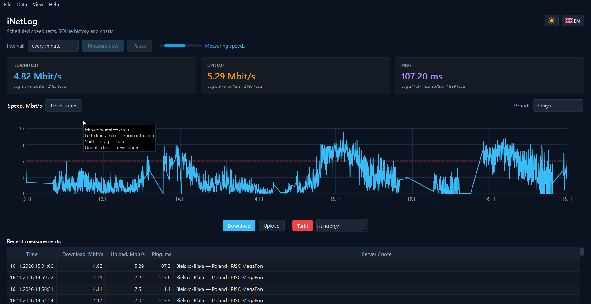

Scheduled measurements
Measure Download, Upload and Ping every 1 to 60 minutes — or run a test on demand.
Know what your internet is really doing. iNetLog measures Download, Upload and Ping on a schedule, keeps the full history in SQLite and turns it into clear, interactive charts.

Features
Set it up once, leave it running and get a clear picture of your connection over hours, days and weeks.
Measure Download, Upload and Ping every 1 to 60 minutes — or run a test on demand.
Every result is stored in SQLite, including failed attempts, so connection drops are easy to spot.
24 hours, 7 days, 30 days, all time or a custom date range. Show only the series you need.
Set your plan speed and compare every test with a red reference line. Toggle it or change the value instantly.
Mouse wheel zooms the time axis, drag a box to zoom into an area, Shift+drag pans, double-click resets.
A clean dark theme for monitoring and a light theme for daylight. Switch instantly from the toolbar or View menu.
The entire interface is bilingual and changes on the fly — no restart required.
Export the full history with formatting, filters and error highlighting for reports or analysis.
One .exe, no installer, no account and no telemetry. The database and settings stay next to the app.
Built for real connections
A single speed test tells you almost nothing. iNetLog builds a timeline of your connection and keeps the context: time of day, failed tests, server and provider details.
# Python 3.10–3.13 is required
py -3.12 -m venv .venv
.venv\Scripts\python -m pip install -r requirements.txt
.venv\Scripts\python main.pyDownload
Download the portable Windows build and start measuring in seconds. The first test runs automatically after launch.
Download iNetLog.exeWindows 10/11 · about 50 MB · MIT license